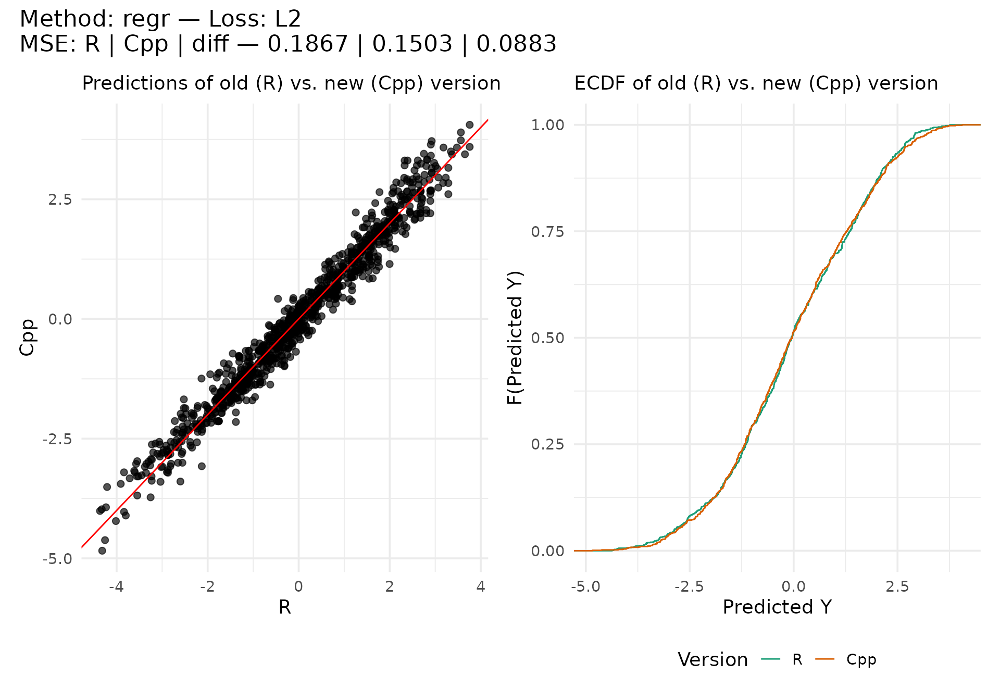

Regression Test: oldrpf
2022-08-31 16:25:45 UTC
Source:vignettes/test/Regression-Test-oldrpf.Rmd
Regression-Test-oldrpf.RmdThis article serves as a regression test to check the behavior of the current (C++) implementation against the previous “old” implementation, referred to as oldrpf.
n <- 1000
p <- 4
beta <- c(.5, 1, 0, -1.5)
beta0 <- 0
cov_base <- 0
sigma <- toeplitz(cov_base^(0:(p - 1)))
x <- matrix(rmvnorm(n = n, sigma = sigma),
ncol = p,
dimnames = list(NULL, paste0("x", seq_len(p)))
)
lp <- x %*% beta + beta0
y <- lp[, 1] + rnorm(n)
ntrees <- 10
max_interaction <- 4
splits <- 10
split_try <- 10
t_try <- 0.4
delta <- 0.1
epsilon <- 0.1Regression
Only supports loss = "L2" and parameters epsilon and delta are not applicable, at least in Cpp version.
cmp_regr <- regression_comparer(
y = y, x = x, ntrees = ntrees, max_interaction = max_interaction,
splits = splits, split_try = split_try, t_try = t_try, loss = "L2", delta = delta, epsilon = epsilon, lp = lp
)
cmp_regr[["preds"]] |>
ggplot(aes(x = R, y = Cpp)) +
geom_point(size = 2, alpha = 2/3) +
geom_abline(color = "red")
Classification
L1 Loss
cmp_classif_l1 <- classif_comparer(
y = y, x = x, ntrees = ntrees, max_interaction = max_interaction,
splits = splits, split_try = split_try, t_try = t_try, loss = "L1", delta = delta, epsilon = epsilon, lop = lop
)
cmp_classif_l1[["preds"]] |>
ggplot(aes(x = R, y = Cpp)) +
geom_point(size = 2, alpha = 2/3) +
geom_abline(color = "red")
L2 Loss
cmp_classif_l2 <- classif_comparer(
y = y, x = x, ntrees = ntrees, max_interaction = max_interaction,
splits = splits, split_try = split_try, t_try = t_try, loss = "L2", delta = delta, epsilon = epsilon, lop = lop
)
cmp_classif_l2[["preds"]] |>
ggplot(aes(x = R, y = Cpp)) +
geom_point(size = 2, alpha = 2/3) +
geom_abline(color = "red")
Logit Loss
cmp_classif_logit <- classif_comparer(
y = y, x = x, ntrees = ntrees, max_interaction = max_interaction,
splits = splits, split_try = split_try, t_try = t_try, loss = "logit", delta = delta, epsilon = epsilon, lop = lop
)
cmp_classif_logit[["preds"]] |>
ggplot(aes(x = R, y = Cpp)) +
geom_point(size = 2, alpha = 2/3) +
geom_abline(color = "red")
Exponential Loss
cmp_classif_exp <- classif_comparer(
y = y, x = x, ntrees = ntrees, max_interaction = max_interaction,
splits = splits, split_try = split_try, t_try = t_try, loss = "exponential",
delta = delta, epsilon = epsilon, lop = lop
)
cmp_classif_exp[["preds"]] |>
ggplot(aes(x = R, y = Cpp)) +
geom_point(size = 2, alpha = 2/3) +
geom_abline(color = "red")
Summary Comparison
cmp_misclass <- rbindlist(list(
cmp_regr[["misclass"]], cmp_classif_l1[["misclass"]], cmp_classif_l2[["misclass"]],
cmp_classif_logit[["misclass"]], cmp_classif_exp[["misclass"]]
))
knitr::kable(cmp_misclass, digits = 5)| method | loss | R | Cpp | diff |
|---|---|---|---|---|
| regr | L2 | 0.17545 | 0.16876 | 0.08233 |
| classif | L1 | 0.08116 | 0.07677 | 0.00422 |
| classif | L2 | 0.08454 | 0.08360 | 0.00456 |
| classif | logit | 0.08343 | 0.08342 | 0.00286 |
| classif | exponential | 0.07780 | 0.07070 | 0.00446 |
cmp_preds <- rbindlist(list(
cmp_regr[["preds"]], cmp_classif_l1[["preds"]], cmp_classif_l2[["preds"]],
cmp_classif_logit[["preds"]], cmp_classif_exp[["preds"]]
))
ggplot(cmp_preds, aes(x = R, y = Cpp)) +
facet_wrap(~method + loss, scales = "free") +
geom_point(size = 2, alpha = 2/3) +
geom_abline(color = "red")
melt(cmp_preds, measure.vars = c("R", "Cpp"), value.name = "Pred", variable.name = "Version") |>
ggplot(aes(x = Pred, col = Version)) +
facet_wrap(~method + loss, scales = "free") +
stat_ecdf() +
scale_color_brewer(palette = "Dark2")